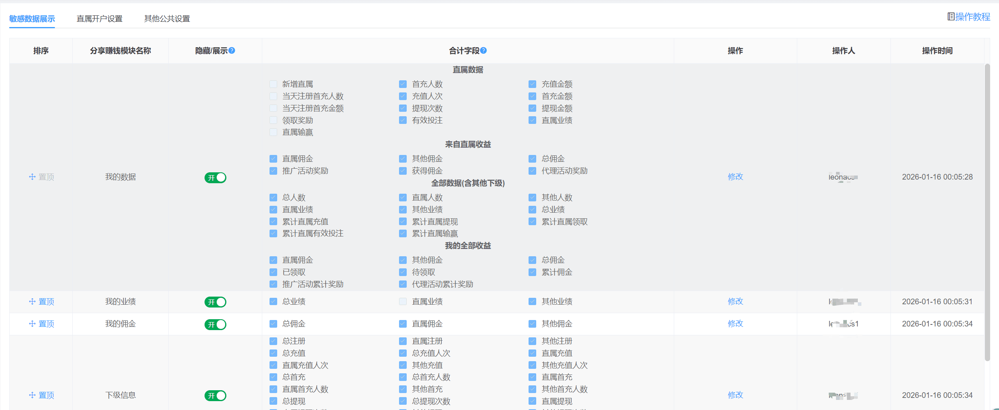
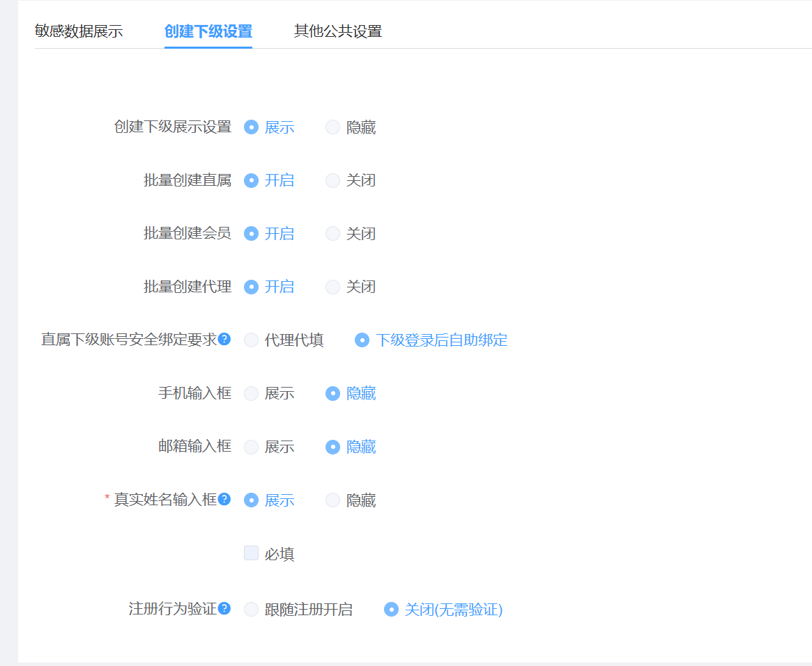
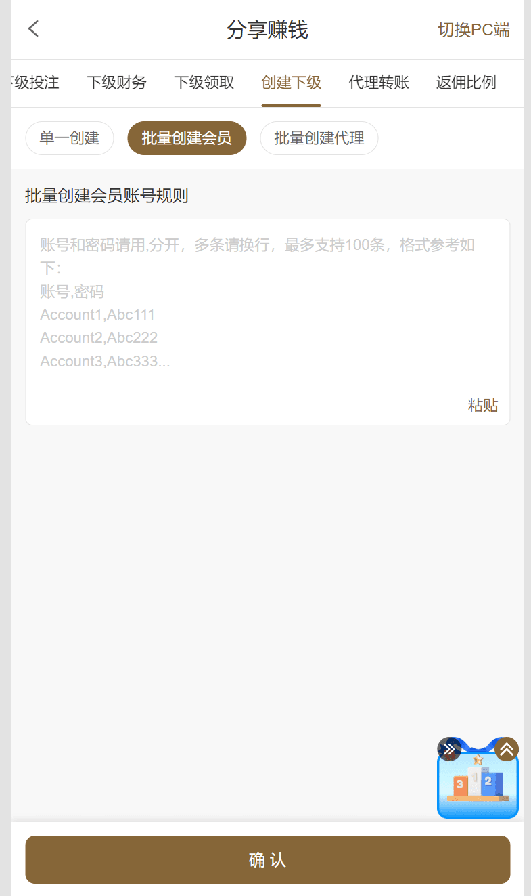
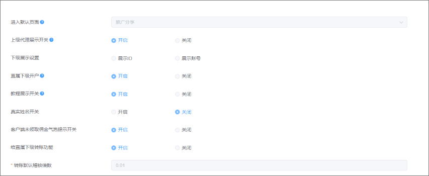
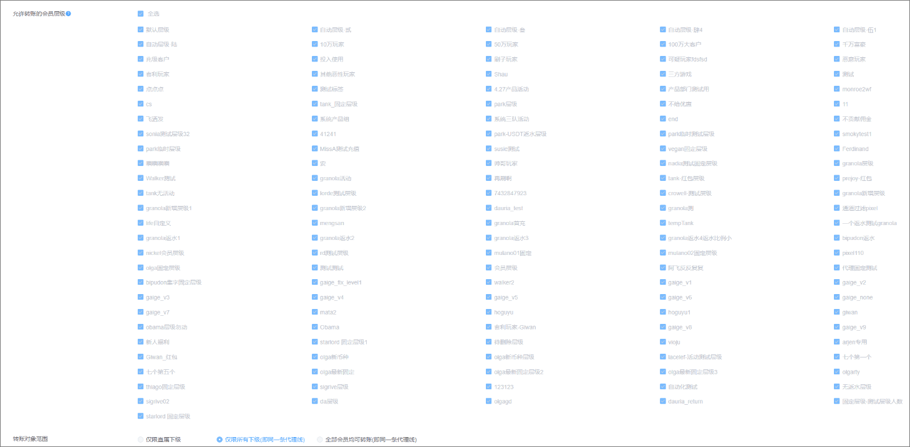

一、代理设置
敏感数据展示
该模块为配置分享赚钱中的我的数据、我的佣金、我的业绩、下级信息、下级财务、下级投注和下级领取的展示和隐藏以及对应的页面的总计字段。
后续新增的字段为默认展示且合计字段同样也为展示，如下图所示
注：相关的金额和人数进行合并展示、直属注册人数和其他人数进行合并展示，当后台没有选中时，则对应的数值不展示 举例说明：选中充值人次时---------充值金额：100(10次) 没有选中充值人次时--------- 充值金额：100

创建下级设置
该模块为分享赚钱模块-创建下级的功能配置。
1、创建下级展示设置 ，如果为隐藏状态，H5端则不展示直属开户的tab， PC端则不展示直属开户的按钮，同时批量创建直属、会员、代理的相关同样也为关闭状态
2、批量创建直属、批量创建会员、批量创建代理 展示逻辑：当代理方式为人人代理，则 只展示批量创建直属的配置；当为专业代理，则展示批量创建会员、批量创建代理，当代理方式为共存，则展示三个，其中默认为关闭（批量创建）。
3、手机和邮箱配置：在启用该功能时，前提时已经配置短信/邮箱通道，否则启用之后也同样不会展示；手机的校验不和注册的配置同步。
4、注册行为验证：跟随注册，即注册配置。

前台示意图：

其他公共配置
该配置主要为分享赚钱的其他的公共配置。
进入默认页： 默认为首页；进行调整之后，则通过分享赚钱进入之后显示对应的配置页面
上级代理展示开关：即是否在分享赚钱、推广分享中展示上级代理；
下级展示设置：即在下级信息、下级投注、下级财务、下级领取中展示的为ID还是账号，建议展示ID；
教程展示开关：是否展示教程，默认为开启；
真实姓名开关：是否在下级信息中展示真实姓名，默认为开启；
客户端未领取佣金气泡提示开关：即是否展示气泡，默认为开启；
以上功能如下图所示：

给直属下级转账功能：是否展示代理给下级转账功能，默认为开启，稽核倍数默认为1.0
转账对象范围：
1、仅限直属下级：即不论是哪种代理方式，只能直属下级转账 。（默认该选项）
2、仅限所有下级：即同一条代理线路的所有下级
3、全部会员均可转账：同一条代理线路的所有上下级都可以转账。
